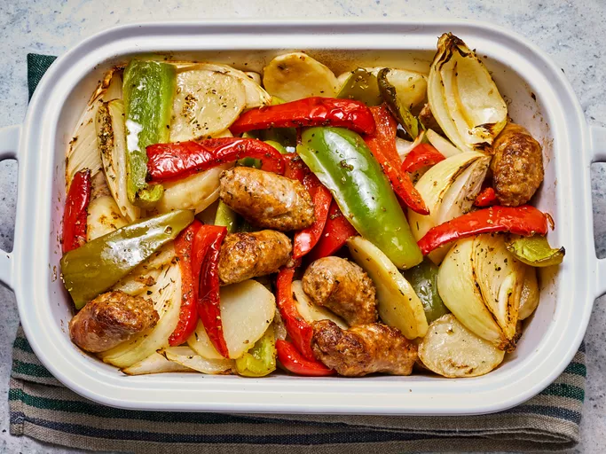

Return to the main page
Sausage, Peppers, Onions, and Potato Bake

Description
This sausage and potato bake is an Italian comfort food classic! The smell of this cooking in my kitchen transports me back to playing on the street in front of my Papa and Gigi's house in Brooklyn.
Ingredients
- 2 teaspoons olive oil
- 2 pounds Italian sausage links, cut into 2-inch pieces
- ¼ cup olive oil
- 4 large potatoes, peeled and thickly sliced
- 2 large green bell peppers, seeded and cut into wedges
- 2 large red bell peppers, seeded and cut into wedges
- 3 large onions, cut into wedges
- ½ cup white wine
- ½ cup chicken stock
- 1 teaspoon Italian seasoning
- salt and freshly ground black pepper to taste
Steps
- Gather all ingredients.
- Preheat the oven to 400 degrees F (200 degrees C)
- Heat 2 teaspoons olive oil in a large skillet over medium heat, and cook and stir the sausage until browned, 5 to 10 minutes. Transfer cooked sausage to a large baking dish.
- Pour 1/4 cup of olive oil into the skillet, and cook potatoes, stirring occasionally, until browned, about 10 minutes.
- Place the potatoes into the baking dish, leaving some oil in the skillet.
- Cook and stir green and red peppers and onions in the hot skillet until they are beginning to soften, about 5 minutes.
- Add the vegetables to the baking dish. Pour wine and chicken stock over the vegetables and sausage, and sprinkle with Italian seasoning, salt, and pepper.
- Gently stir sausage, potatoes, and vegetables together.
- Bake in the preheated oven until hot and bubbling, 20 to 25 minutes. Serve hot.
This recipe was extracted from AllRecipes. All credits belong to them.